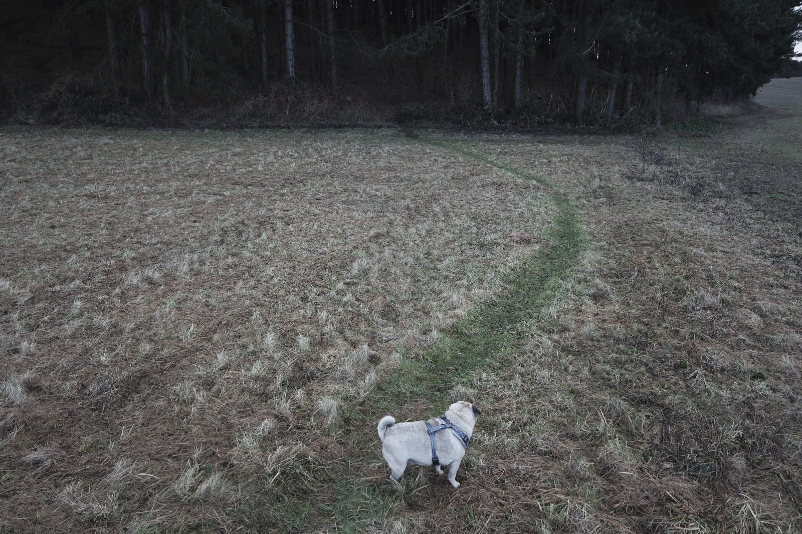
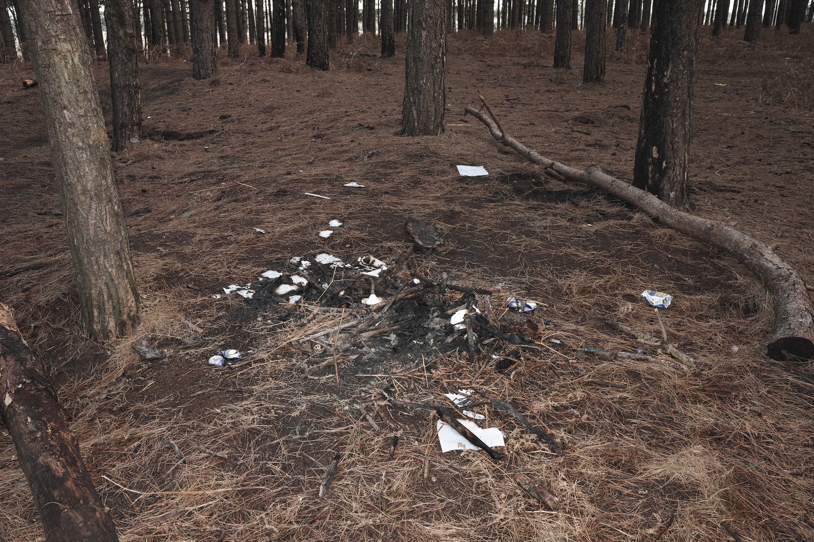
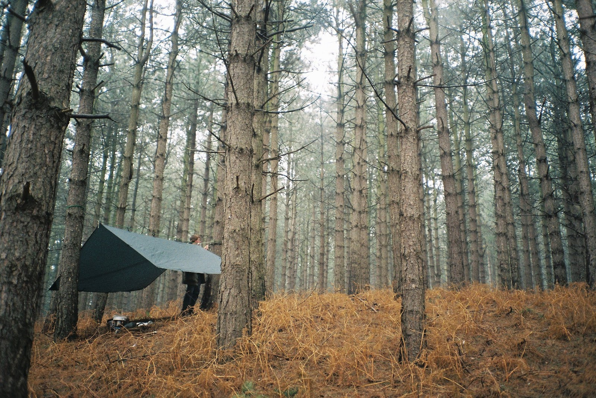
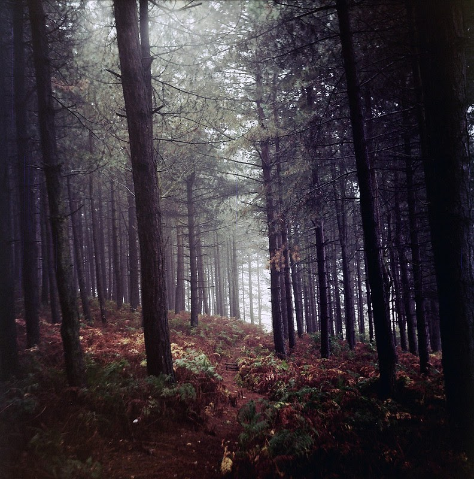
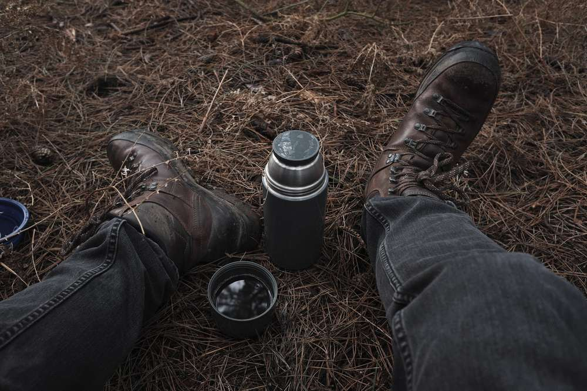

Rich's digital garden
In praise of quiet marginal spaces
Escaping the post-Christmas covid crowd that saunter the edgelands by noon, we walk to a coniferous plantation, black clump hill. At 172 metres at its widest and 680 metres long, its more a wedge than a clump, and the hill is rather a forested mound within an otherwise flat agrarian landscape.
Dog on desire path to the hill.
{kind=link}
Aside from its misfit name, it’s quiet enough for a mid-walk coffee break and has accessible paths running the breadth of the woodland forming a transitional interfacial space between urban and rural territories. A sewage treatment plant situates to the south and a golf course to the west, while opposite is the countryside. Used by dog walkers and joggers, its transitional characteristic leads to the quietness found here, many walk through but few stop.
Remains of fire and probable gathering
{kind=link}
The few that do stop, however, leave their mark. Away from the main path an assortment of contemporary artefacts can be found from garden furniture, tools, drink cans, bottles, foil barbeques, broken lighters and clothing. All of which can be found around various scorched fire pits and a makeshift dirt bike track, complete with jumps and barriers. This willful abandonment of waste and modification will probably offend most, especially those that consider plantations, sites of lumber planted in uniform repetitious spacings, as nature. Both are systematic of the site being unwatched and outside of the conventional urban environment.
 Part of the bike track
Part of the bike track
Aside from the abandoned waste, which in any environment is terrible, the evidence of unhindered modification and lack of surveillant authority is liberating. While urban parks are formal tidy representations of nature and designed to promote civilized behaviour, this unofficial park is chaotic, spontaneous and dangerous. Today its a suspect bike track, tomorrow it could be a den, a space to gather around a fire, or an entirely different makeshift structure. The sites spontaneous fluidity is dependent on the user’s appropriation.
Camping at black clump hill early 2013
{kind=link}
From my first roll of MF, shot at black clump hill, late 2012
{kind=link}
Even I have used the unwatched and accessible space. I practiced camping and outdoor skills with friends. Without a local campsite, in what conventional urban space or park could you use a gas stove and pitch a hammock or tarp without hindrance? Additionally, I shot my first roll of medium format here, learning to take light readings in the field. I learnt a lot of skills here out of the way, free from judgement and authority. Now, I am just a fellow traveller, stopping by to drink my coffee mid dog walk and enjoy the solitude.
Black clump hill 2021
{kind=link}
This article is from my newsletter. Consider subscribing, it's free and weekly.
Created
10/01/2021
Topics
Roadside Picnic
Marginal Spaces